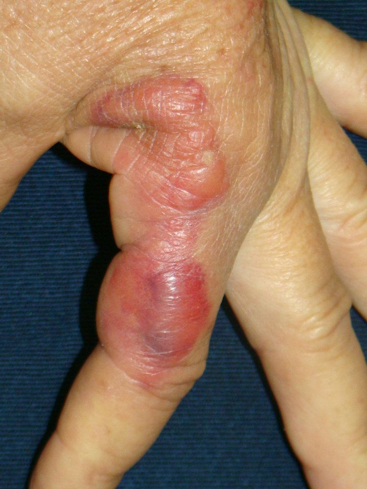
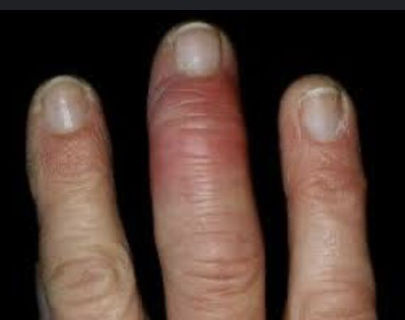
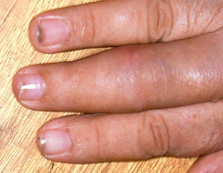
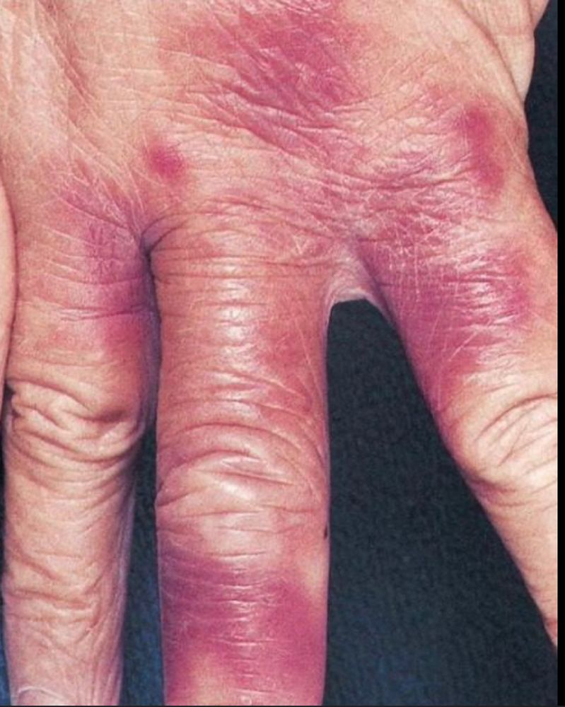
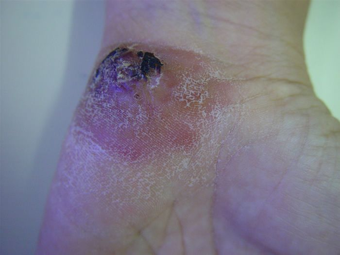
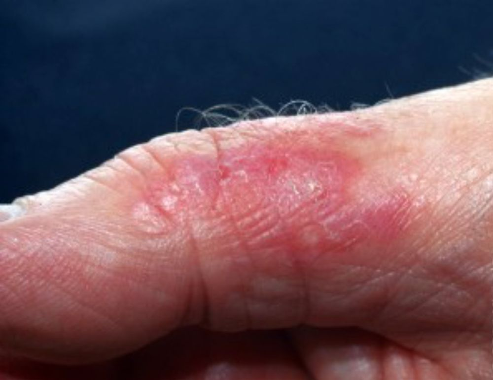
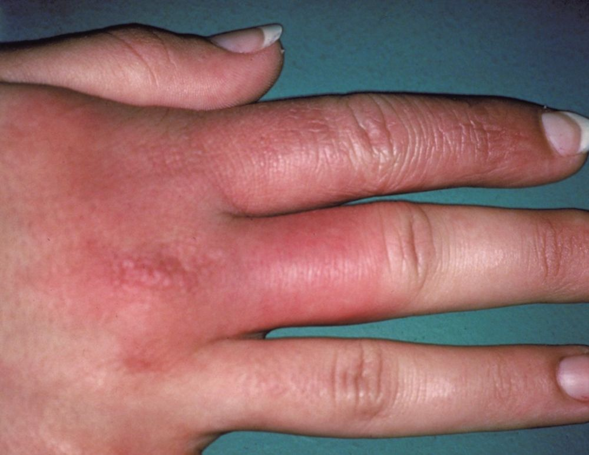
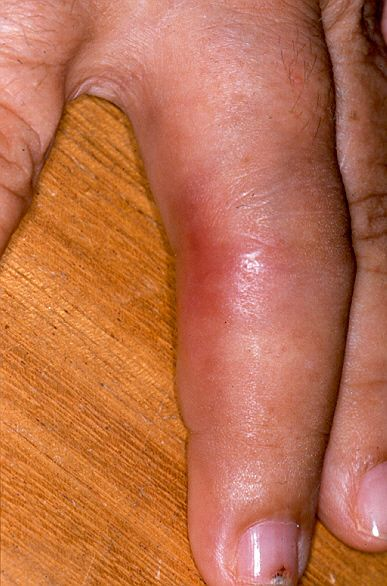
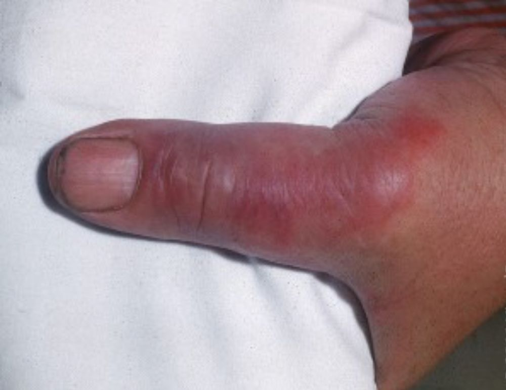
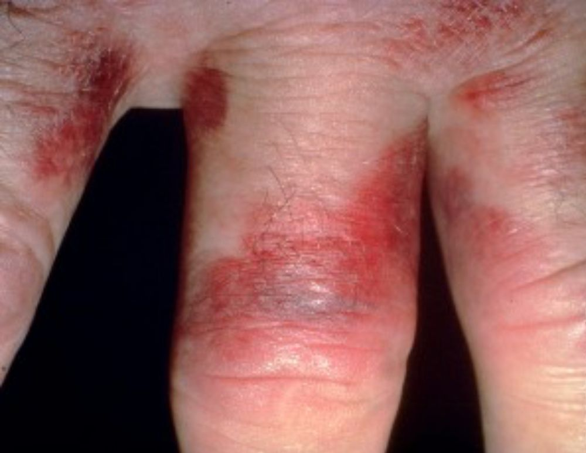

Infecção bacteriana aguda, causada pelo Erysipelothrix rhusiopathiae, anteriormente conhecida como E. insidiosa. Trata-se de uma doença essencialmente ocupacional, que ocorre pelo contato direto da pele humana traumatizada com animais infectados como moluscos, peixes, aves e mamíferos. Porcos parecem ser seu principal reservatório.
Após acidente perfurante com escama de peixe ou osso, corte com faca durante tratamento de carne, peixe ou molusco, ou qualquer outra violação da pele com material que tenha entrado em contato com animais contaminados, pode ocorrer o desenvolvimento de lesão típica, poucos dias após o trauma (normalmente menos de 4 dias). Mais comum a contaminação entre açougueiros, pescadores, cozinheiros e donas de casa. Caixas de peixe, cheias ou vazias, parecem ser importante fonte de infecção.
Epidemiologia
Doença rara, sem predominância entre idade, raça ou sexo. Ocorre incidência aumentada no verão e início do outono.
Etiopatogenia
Causada pelo Erysipelothrix rhusiopathiae, bactéria gram-positiva que penetra na pele através de arranhões ou ferimentos perfurantes. No organismo, é capaz de produzir enzimas que penetram através dos tecidos, podendo acometer coração, pulmão, cérebro, articulações e sistema nervoso central. A pele sempre é o órgão mais acometido, seguido pelo coração, no qual pode causar endocardite.
Quadro clínico
Pode ocorrer a forma cutânea localizada (erisipeloide de Rosenbach), forma cutânea difusa ou infecção sistêmica/generalizada, caracterizada por bacteremia.
Nas formas cutâneas, ocorre eritema, dor e ardência no local da lesão. Pode haver febre, astenia e outros sintomas constitucionais. O principal diagnóstico diferencial sempre é com celulite e erisipela. Na maioria dos casos, a ocupação do paciente é útil para guiar o diagnóstico.
– Forma cutânea localizada: apresenta-se como placas eritematovioláceas, bem delimitadas, edematosas, brilhantes, quentes e muito dolorosas, variando de 1 a 10 cm de diâmetro. Supuração não costuma ocorrer. Afeta principalmente os dedos e as mãos, mas qualquer área que sofra traumatismo pode ser afetada.
– Forma cutânea difusa: Ocorrem múltiplas lesões de placas eritematovioláceas, bem delimitadas, com crescimento periférico e clareamento central.
– Forma generalizada: Ocorre bacteremia com endocardite, artrite ou septicemia, especialmente em pacientes imunocomprometidos.
O paciente apresentará febre, calafrios, perda de peso, e outros sintomas a depender do órgão envolvido. Lesões de pele podem não estar presentes. Quando presentes, apresentam-se como placas edematosas, com necrose central.
Diagnóstico
Baseado no histórico ocupacional e clínico.
Cultura da lesão ou biópsia (a bactéria é de crescimento lento em laboratório).
PCR ou testes sorológicos podem auxiliar.
Diferenciação de erisipela:
Erisipela: Causada por Streptococcus, com lesões mais avermelhadas e bordas elevadas, frequentemente associadas a febre e mal-estar.
Erisipeloide: Associado a ocupações de risco, sem febre na forma localizada.
Tratamento
A bactéria é facilmente eliminada pelo uso de desinfetantes, que devem ser utilizados nos meios de preparo, para evitar a infecção. A infecção é autolimitada e o tratamento pode ser feito com antibióticos, em especial penicilinas e cefalosporinas. Ceftriaxone é uma boa opção. Importante salientar que o microrganismo é resistente a vancomicina e para os alérgicos, ciprofloxacina é uma boa alternativa. Casos graves/sistêmicos: Penicilina intravenosa.
Prevenção
Uso de luvas e equipamentos de proteção ao manipular animais ou produtos.
Higienização adequada de feridas.
Se houver suspeita de complicações sistêmicas, encaminhamento médico urgente é necessário.
REFERÊNCIAS BIBLIOGRÁFICAS
1. Triple Threat: A Case of Erysipelothrix rhusiopathiae Septicemia Complicated by Multi-Valvular Endocarditis, Spinal Osteomyelitis, and Septic Embolic Stroke. De Narvaez E, Schoenfeld D, Elshereye A, Tran JD, Oehler RL.Cureus. 2022 Aug 8;14(8):e27789.
2. Erysipeloid: a review. Veraldi S, Girgenti V, Dassoni F, Gianotti R.Clin Exp Dermatol. 2009 Dec;34(8):859-62.
3. Erysipelothrix rhusiopathiae. Wang Q, Chang BJ, Riley TV.Vet Microbiol. 2010 Jan 27;140(3-4):405-17.
4. Erysipelothrix rhusiopathiae: an occupational pathogen. Reboli AC, Farrar WE.Clin Microbiol Rev. 1989 Oct;2(4):354-9.
5. Mimickers of erysipelas and cellulitis: A narrative review. Gowda SK, Garg S, Behera B, Thakur V, Sahu DK.Indian J Dermatol Venereol Leprol. 2024 Oct 8:1-10.
Atlas de imagens 10




















Na Skin Prime
Como podemos ajudar
Entre os recursos citados para Erisipeloide, estes estão disponíveis na clínica:
Diagnóstico